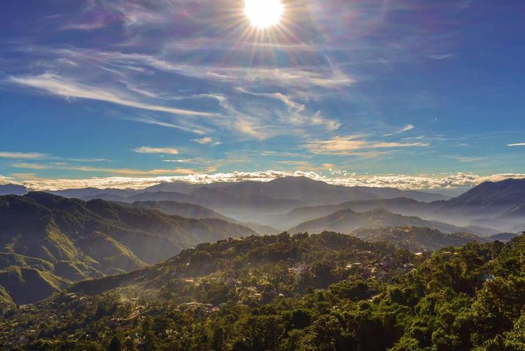
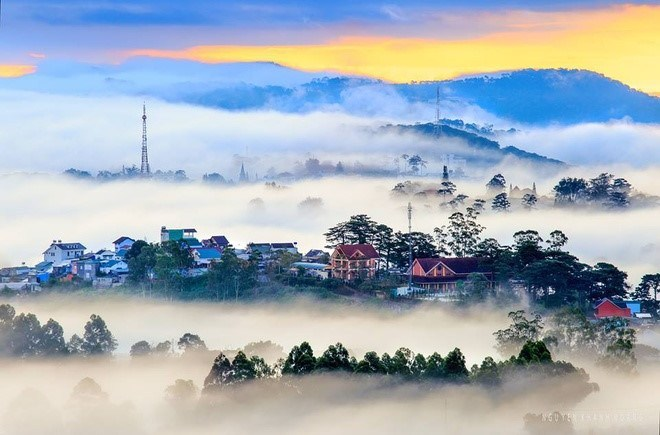

Geography
Baguio is a landlocked city in the province of Benguet, located 250 kilometers north of Manila.
It covers 57.5 km2 of land. It is renowned as the entrance to the Cordillera in the Northern Philippines' mountain provinces.
It may be reached from the lowlands through three national highways: the Quirino Highway, also known as the Naguilian Highway (north),
Southbound Kennon Road and Marcos Highway (west). It is also accessible via the Halsema Highway, particularly for people coming from Benguet.
Mt. Province and Baguio is also accessible by air via Loakan Airport, which is located south of the city.

Climate
The city has a cool temperate climate, with temperatures averaging 19.3 degrees Celsius. The temperature can drop to as low as 10 degrees in the winter.
December, January, and February are the coldest months of the year. This is because of its elevation of 1,500 meters above sea level and the presence of pine trees.
topography clad The dry season lasts from November to April, whereas the wet season lasts the rest of the year.
